Laboratório de Biofísica de Fungos


Da superfície fúngica à clínica: nossos estudos integram abordagens estruturais, físico-químicas e moleculares para elucidar a virulência, o impacto ambiental e os processos de interação com o hospedeiro, contribuindo para o desenvolvimento de estratégias diagnósticas mais sensíveis e terapias mais eficazes.
Conheça nosso laboratório
Inaugurado em 23 de setembro de 2020 pela Profa. Dra. Susana Frasés, o Laboratório de Biofísica de Fungos (Labiofun) dedica-se a pesquisas multidisciplinares e inovadoras na área de micologia.
Nosso propósito central é aprofundar o conhecimento e responder a uma pergunta desafiadora: o que faz um fungo ser um patógeno?
Adotamos o paradigma Saúde Única (One Health), integrando dados e saberes da saúde ambiental, da medicina humana e veterinária para compreender de forma holística como os fungos interagem com diferentes nichos e hospedeiros — e como essas interações são influenciadas pelas mudanças climáticas e pela ação humana.
Propósito de existir e pesquisar
Desenvolver conhecimento translacional em micologia que conecte biologia de superfícies, mecanismos de virulência e dinâmica ecológica, oferecendo soluções para desafios atuais em saúde humana, animal e ambiental.
Nossas principais áreas de investigação científica
Estudamos a morfologia e propriedades físico-químicas das camadas externas dos fungos e sua relação com adesão, colonização e evasão imune.
Desenvolvemos métodos e modelos físico-teóricos que relacionem composição, estrutura e atividade biológica de fungos.
Estudamos a superfície de fungos patogênicos e suas implicações na interação parasito-hospedeiro.
Investigamos como fungos se adaptam a variações de temperatura, estresse ambiental e novos nichos ecológicos, incluindo mudanças morfológicas associadas à patogenicidade.
Monitoramos e caracterizamos mecanismos de resistência emergentes, como resposta a pressões ambientais e exposição a antifúngicos, com foco em isolados multirresistentes.
Avaliamos como o aquecimento global e as alterações ambientais modificam a distribuição, dispersão e emergência de fungos patogênicos em novos habitats.
Triamos e caracterizamos novos agentes antifúngicos com potencial contra isolados resistentes, além do desenvolvimento de estratégias terapêuticas alternativas e combinadas.
Democratizamos o conhecimento científico: traduzimos evidências complexas em uma linguagem clara e acessível. Dessa forma, conectamos a academia aos profissionais de saúde e à sociedade, promovendo a interação necessária para decisões conscientes e embasadas na Ciência.
Principais abordagens metodológicas utilizadas em nossas pesquisas
Testes que avaliam a resposta fúngica a condições adversas (variações de pH, estresse oxidativo, restrição de nutrientes, temperatura), permitindo identificar vulnerabilidades para desenvolvimento de antifúngicos.
Avaliação do "tamanho" hidrodinâmico, polidispersão e agregação de partículas/fenótipos superficiais, usada para detectar alterações em resposta a variações ambiental (pH, estresse oxidativo, nutrientes).
Ensaios para avaliar as propriedades viscoelásticas de polissacarídeos capsulares e secretados, avaliar a resposta a tensões mecânicas e mapear alterações mecânicas vinculadas à interação hospedeiro–patógeno
Análise da morfologia e ultraestrutura fúngica (SEM/TEM).
Base para identificação morfológica, análise de ciclos de vida, colorações diferenciais e observação em tempo real de interações fungo–hospedeiro.
Mensuração de forças na faixa de picoNewtons (pN), manipulação de células fúngicas individuais e estudo de interações mecânicas entre células e superfícies.
Mensuração de carga superficial e estabilidade coloidal, essencial para caracterizar propriedades eletrostáticas que influenciam adesão e interações celulares.
Screening de candidatos antifúngicos, testes de sensibilidade (incluindo contra isolados multirresistentes) e desenvolvimento de estratégias terapêuticas alternativas ou em combinação.
Conheça nossos pesquisadores e parceiros científicos
Professora - Ph.D
Chefe do laboratório
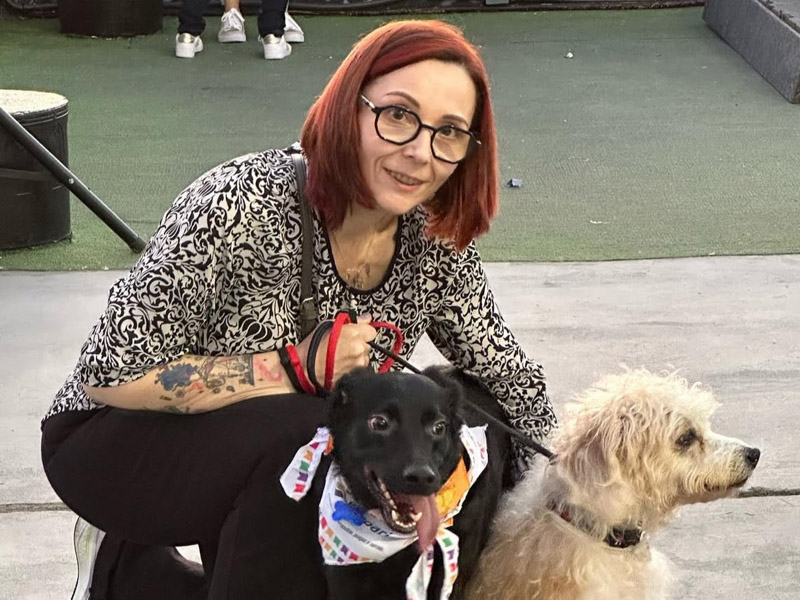
Bióloga (Universidad Miguel Hernández, Espanha), especialista em biofísica de superfícies fúngicas e na complexa interação patógeno-hospedeiro, com ênfase em mecanismos de virulência, resistência antimicrobiana, impacto ecossistêmico e mudanças climáticas, além da prospecção de compostos bioativos para aplicações biotecnológicas e terapêuticas.
Professora - M.D & Ph.D
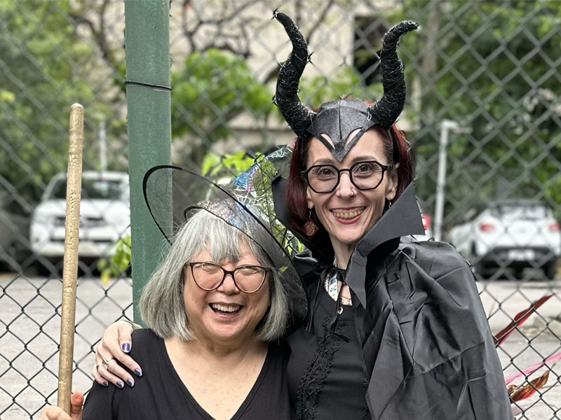
Pós-doutor - M.Sc & Ph.D
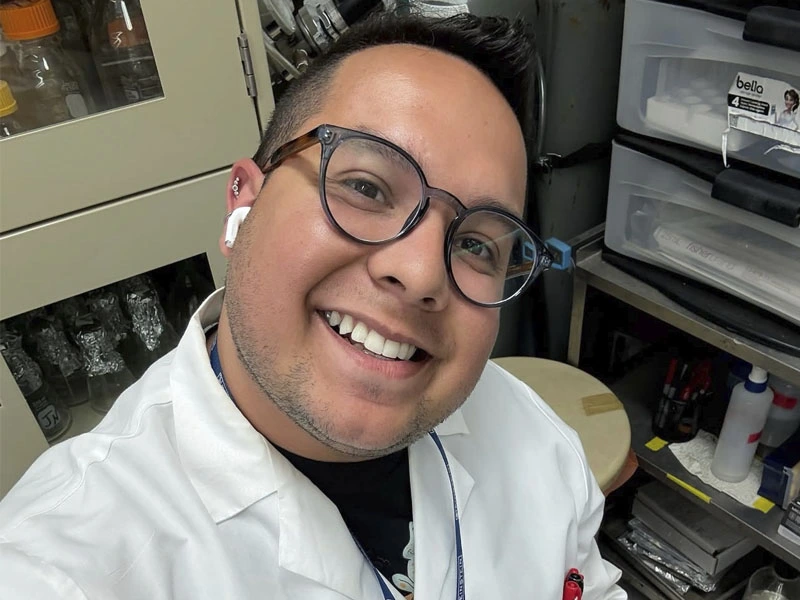
Biólogo (UFMS), especialista na área de microbiologia, com ênfase em micologia e ensino de biociências aplicadas à saúde, com foco em mecanismos de virulência, resistência antimicrobiana e impacto ecossistêmico, integrando pesquisa avançada e práticas educacionais para promover o conhecimento científico e a saúde pública e única (One health).
Pós-doutor - M.Sc & Ph.D
Alma mater em biofísica (UFRJ), com foco na caracterização estrutural e mecânica de superfícies fúngicas. Experiência avançada na aplicação de técnicas cutting edge incluindo espalhamento de luz, análise viscoelástica, microscopia óptica e eletrônica para elucidar a arquitetura molecular, propriedades mecânicas e interações físico-químicas em micro e nanoescala.
Doutoranda - M. Sc
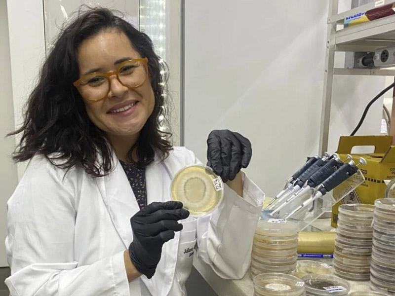
Doutorando - M.Sc
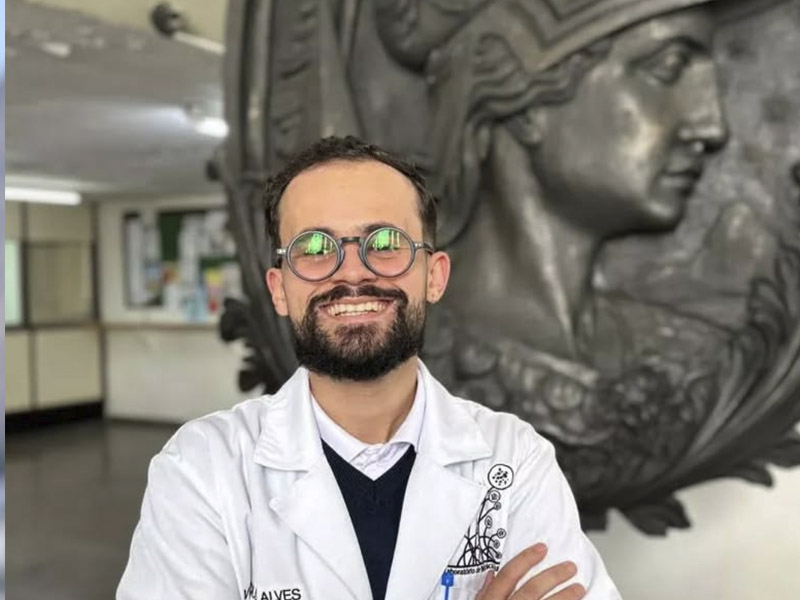
Mestranda
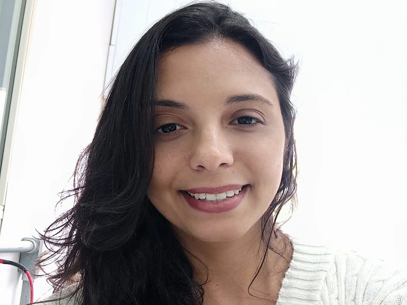
Bióloga (UFRJ), com foco em Educação para a Saúde. Especializada no desenvolvimento de recursos didáticos inovadores, como jogos educativos, para a prevenção de Infecções Sexualmente Transmissíveis (ISTs). Atua na promoção do aprendizado ativo e na conscientização de estudantes do ensino médio, transformando a educação sexual por meio da criatividade e do engajamento.
Mestrando
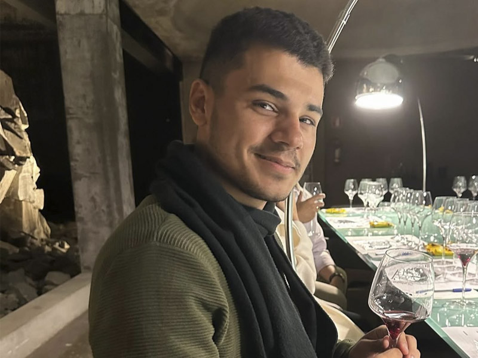
Farmacêutico (UFRJ), seu foco é sistematizar e equalizar o conhecimento sobre medidas epidemiológicas das micoses endêmicas no Brasil, voltada tanto para a população geral quanto para profissionais de saúde. Atua no desenvolvimento de campanhas de conscientização, diagnóstico e tratamento, incluindo o mapeamento de casos de hospitalização e óbito, estimativa da incidência e prevalência por região, criação de mapas de risco e elaboração de materiais educativos adaptados para diferentes públicos, com foco na prevenção e no manejo eficaz dessas doenças.
Mestranda
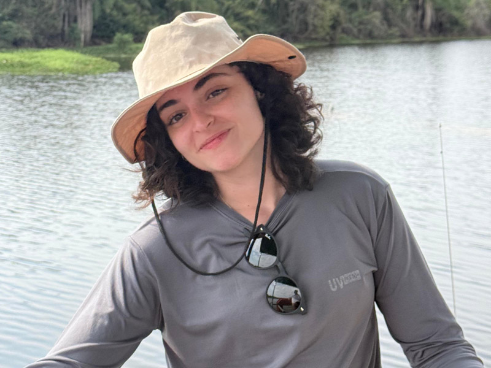
Mestranda
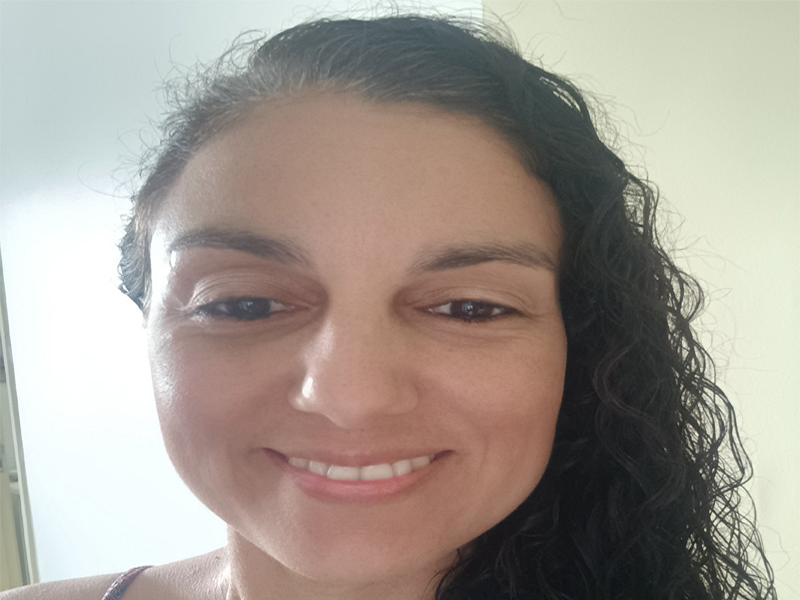
Filosofa (IFCS/ UFRJ), desenvolve manuais de gestão escolar com foco em Saúde Única, integrando divulgação científica e práticas de gestão democrática para combater a desinformação no ambiente educacional. Atua no desenvolvimento de modelos conceituais, diagnóstico das necessidades escolares e criação de conteúdos práticos.
Iniciação Científica
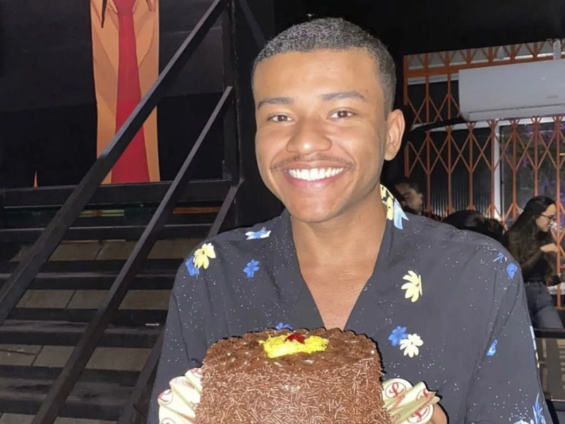
Iniciação Científica
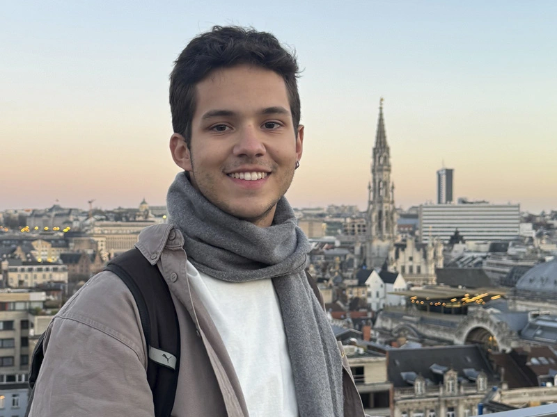
Iniciação Científica
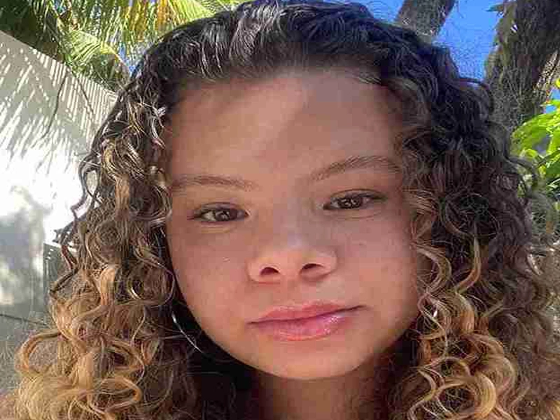
Iniciação Científica
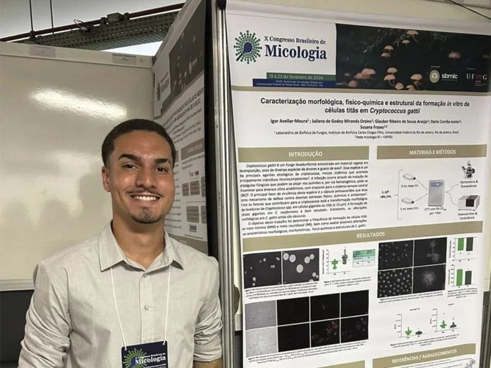
Iniciação Científica
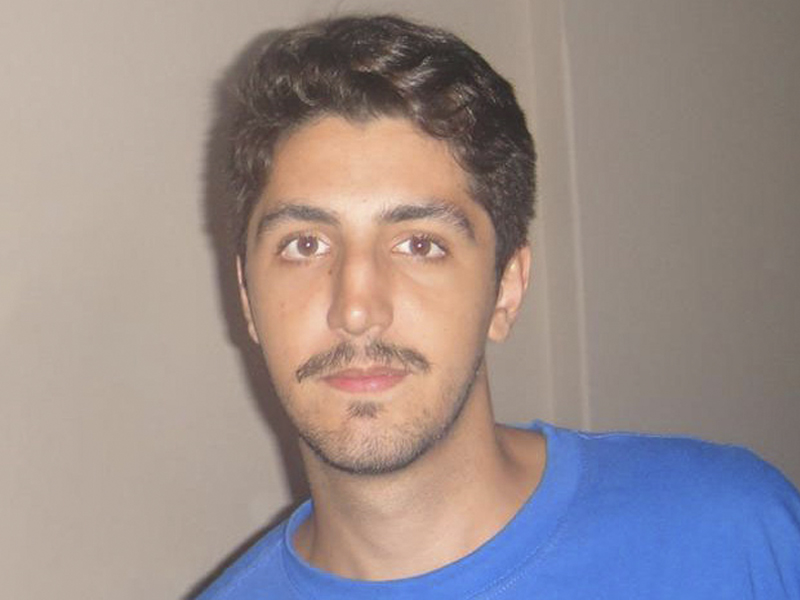
Iniciação Científica
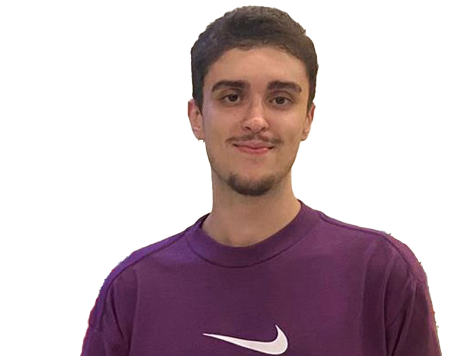
Bacharelando em Biotecnologia (UFRJ), Estuda sobre mecanismos de virulência, resistência antimicrobiana e impacto ecossistêmico de leveduras, com foco na compreensão dos processos biológicos que influenciam a patogenicidade desses microrganismos e suas consequências ambientais em ecossistemas de manguezais.
Iniciação Científica
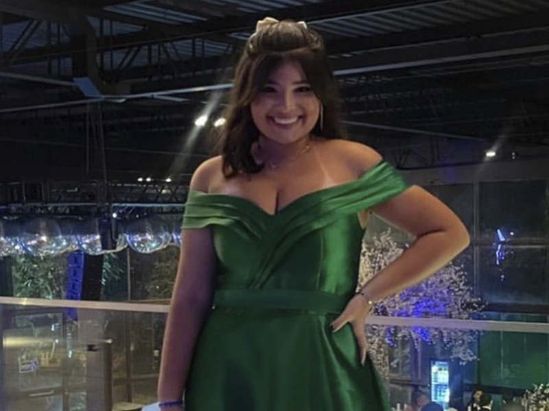
Produção científica do laboratório
Visite nosso laboratório na Cidade Universitária
Laboratório de Biofísica de Fungos (Labiofun)
Avenida Carlos Chagas Filho, 373
Bloco C1, Sala 37
Cidade Universitária
Rio de Janeiro, RJ
CEP: 21941-902
Acompanhe nossas atividades e publicações